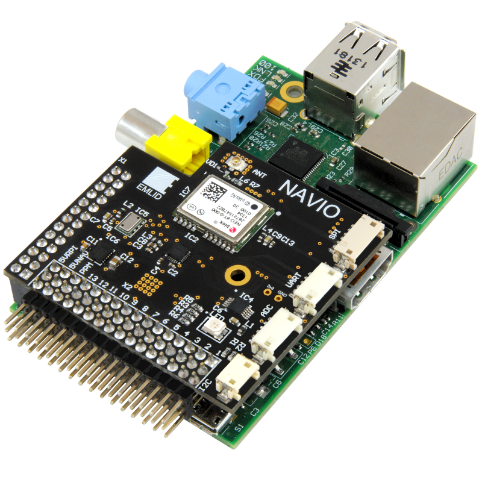

# administrivia ## **Design of Autonomous Systems** ### csci 6907/4907-Section 86 ### Prof. **Sibin Mohan** --- ## class schedule ||| |--------|--------| |days | <scb>tuesdays</scb> and <scb>thursdays</scb> | |times | <scb>12:45 -- 2:00 PM</scb> | |location | <scb>DUQUES 259</scb> | || -v- ## lab sections ||| |--------|--------| |tuesdays| <scb>2:30 -- 3:20 PM</scb> | |location| <scb>SEH 4040</scb>| || -v- ## lab sections ||| |--------|--------| |tuesdays| <scb>2:30 -- 3:20 PM</scb> | |location| <scb>SEH 4040</scb>| || - these are **required** -v- ## lab sections ||| |--------|--------| |tuesdays| <scb>2:30 -- 3:20 PM</scb> | |location| <scb>SEH 4040</scb>| || - these are **required** - you will learn useful concepts -v- ## lab sections ||| |--------|--------| |tuesdays| <scb>2:30 -- 3:20 PM</scb> | |location| <scb>SEH 4040</scb>| || - these are **required** - you will learn useful concepts - hands-on experience with hardware - with assistance from teaching staff -v- ## lab sections ||| |--------|--------| |tuesdays| <scb>2:30 -- 3:20 PM</scb> | |location| <scb>SEH 4040</scb>| || - these are **required** - you will learn useful concepts - hands-on experience with hardware - with assistance from teaching staff - can work on small assignments+extra credit --- ## course staff -v- ## instructor ||| |------------------------------------------------|--------| | **Prof. Sibin Mohan** <br> * associate professor <br> * computer science <br> * security, systems <br> * photography, travel <br> | <img src="./img/staff/sibin_rover.png" height="275">| || **sibin.mohan\@gwu.edu** -v- ## teaching assistant ||| |------------------------------------------------|--------| | **Vineetha Paruchuri** <br> * Ph.D. student<br> * computer science <br> * security <br> | <img src="./img/staff/vineetha_paruchuri.png" height="275">| || **vineetha.paruchuri\@gwu.edu** --- ## office hours |person|day of week|time(s)| |------|-----------|-------| |Sibin |Thursdays | <scb>3:30 -- 4:30 PM</scb>| |Vineetha |<scb>TBA</scb>| || -v- ## communication - **discord** - email for sickness/absence/_etc._ -v- <center><div class="center" data-id="box" style="height: 75px; width: 700px; background: orange;"> <b>respect</b> everyone's time! </div></center> -v- ### office hours **etiquette** - read: [**<scb>how to prepare for office hours</scb>**](https://www2.seas.gwu.edu/~gparmer/resources/2021-09-20-Office-Hours-HOWTO.html)! - be respectful → to TA and other students - **come prepared!** -v- ### discord **ettiquette** * **do not DM the teaching staff (on discord)** *<!-- .element: class="fragment" data-fragment-index="1" --> * no guarantee for immediate response <!-- .element: class="fragment" data-fragment-index="2" --> * response times → (approx.) 24 hours <!-- .element: class="fragment" data-fragment-index="3" --> [\* send me DMs if critical; absences via email only]<!-- .element: class="fragment" data-fragment-index="4" --> --- ## course content --- ## course content - design and implementation of **autonomous systems** --- ## course content - design and implementation of **autonomous systems** - this is a "**full stack**" course --- ## course content - design and implementation of **autonomous systems** - this is a "**full stack**" course ||| |-------------|--------------| | **low** level | sensing/actuation/embedded design/<br>real-time scheduling+os | --- ## course content - design and implementation of **autonomous systems** - this is a "**full stack**" course ||| |-------------|--------------| | **low** level | sensing/actuation/embedded design/<br>real-time scheduling+os | | **mid** level | control algorithms, ekf, sensor fusion | --- ## course content - design and implementation of **autonomous systems** - this is a "**full stack**" course ||| |-------------|--------------| | **low** level | sensing/actuation/embedded design/<br>real-time scheduling+os | | **mid** level | control algorithms, ekf, sensor fusion | | **higher** level | slam, path planning, object detection <br> object avoidance/waypoints | --- ## course content - design and implementation of **autonomous systems** - this is a "**full stack**" course ||| |-------------|--------------| | **low** level | sensing/actuation/embedded design/<br>real-time scheduling+os | | **mid** level | control algorithms, ekf, sensor fusion | | **higher** level | slam, path planning, object detection <br> object avoidance/waypoints | | **abstract** | safety, security, verification | || --- ## course structure --- - **lectures** → concepts, deep dives into topics - **lab** sections → exploration of singular topics - _e.g.,_ how to connect to, and program, a _raspberry pi_ - **machine problems** (mps) → hands-on exercises - on hardware/software --- well-defined learning sequence: <br> ### lectures → labs → mp --- ### hands-on assignments using hardware platforms <br> <div class="multicolumn"> <div> <img src="./img/hw/pi.png" height="300"> raspberry pi </div> <div> <br> navio2 </div> <div> rovers </div> </div> --- ## grading rubric | Component | % Grade | |------------|---------| | mp 1: detecting motions from sensors | 15 % | | mp 2: real-time scheduling | 15 % | | mp 3: ekf | 20 % | | mp 4: rover programming and control | 25 % | | lab | 15 % | | class participation | 10 % | || -v- ## grading rubric | Component | % Grade | |------------|---------| | mp 1: detecting motions from sensors | 15 % | | mp 2: real-time scheduling | 15 % | | mp 3: ekf | 20 % | | mp 4: rover programming and control | 25 % | | lab | 15 % | | class participation | 10 % | || ### mp4 includes a leaderboard-style race → extra credit -v- ### homeworks grading - script-based grading <!-- .element: class="fragment" data-fragment-index="1" --> - negative points → not following exact instructions <!-- .element: class="fragment" data-fragment-index="3" --> -v- ### homeworks grading (contd.) - you may be **randomly** chosen for → **oral q&a** - failure → loss of homework grade! <!-- .element: class="fragment" data-fragment-index="1" --> --- ## academic honesty --- ## academic honesty | don't | | |---------|--------| | copy/share code | | | look at others' code! | | || --- ## academic honesty | don't | do | |---------|--------| | copy/share code | discuss with others | | look at others' code! | ask prof/ta | || --- ## academic honesty | don't | do | |---------|--------| | copy/share code | discuss with others | | look at others' code! | ask prof/ta | || <br> <center><div class="center" data-id="box" style="height: 75px; width: 850px; background: orange;"> <b>do not</b> use chatgpt, copilot, etc.! </div></center> --- ## violations <font style="background-color:orange;"> <b>will be reported</b> </font> to the academic integrity office! --- ## course resources | resource | use | |---------|--------| | course **website** | [**link**](https://autonomy-course.github.io) | | **discord** server | labs | | **blackboard** | announcements/grades | | **github** | mps/labs| ||